Project Overview
Phoenix's Wand started as a piece of wood I found while hiking. At the time, I was experimenting with carving walking sticks and wizard staffs, and this particular branch seemed like it had potential for something a little different.
What started as a simple woodworking experiment eventually became an opportunity to bring a little magic into the lives of a mother and her son.
With Phoenix's birthday around the corner, I decided to turn the branch into a proper wizard's wand, complete with an embedded blue agate, a handcrafted redwood presentation case, and a letter introducing him to the fictional Order of the Blue Phoenix.
Of course, I couldn't just make a wand. The project kept expanding, introducing me to new tools, woodworking techniques, upholstery, 3D-printed wax stamps, and a bit of worldbuilding along the way.
This was my first wand and my first wooden presentation case. Neither is perfect, but I'm proud of what I made and glad I followed through with the idea.
Concept & Inspiration
I’d been collecting branches on hikes to experiment with walking sticks and wizard staffs. One piece wasn’t quite right for a staff, but I started carving it anyway and realized it might make a wand. At first, I had no particular recipient in mind.
When I learned that a boy named Phoenix had a birthday coming up, the project found its direction. His name inspired the Order of the Blue Phoenix: a little magical lore contrasting the familiar fiery red phoenix with a blue phoenix associated with healing, curiosity, kindness, and protecting small things.
I’d also come across a blue agate while browsing vintage and thrift-shop crafting materials. It wasn't originally purchased for this wand, but the color worked perfectly with the new theme.
Design & Planning
The wand was meant to feel rustic and organic, with a loose Harry Potter influence rather than a replica of anything specific. I worked with the natural shape of the branch, carved a comfortable grip, added a spiral for a little pizzazz, and positioned the blue agate near the thumb rest.
For the case, I liked the look of old wizard-workshop boxes and the solid-wood cases made by skilled craftspeople online. Instead of assembling boards, I wanted to split a single piece of redwood lengthwise, hollow the lid and base, and add hinges and a keyed clasp.
I bought 3.5 × 3.5-inch redwood lumber at Home Depot and cut it into four 20-inch lengths and one 17-inch length. I chose one 20-inch piece for the case. There was no formal blueprint, and the birthday deadline kept the project moving.
Materials & Tools
Materials. Found branch; redwood; thrift-shop blue agate; epoxy; teak oil; Rust-Oleum primer and satin-black paint; brass-colored brackets, hinges and keyed clasp; dense floral-arrangement foam; royal-blue broadcloth; sealing wax; resin crystal; printed letter and envelope.
Tools. Whittling knives; hand saw; chisels; rotary tool with circular sanding attachment; separate engraving tool with rounded bit; drill (an older one failed and was replaced); sandpaper; clamps or pressure during epoxy curing; 3D printer; protective goggles.
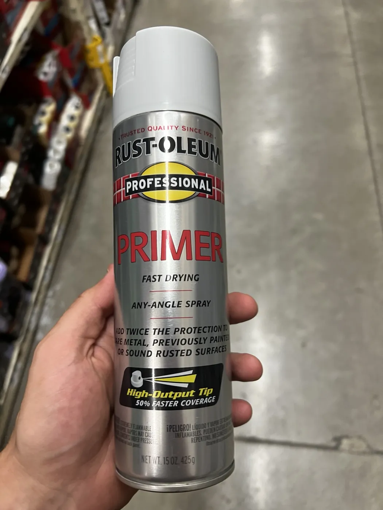
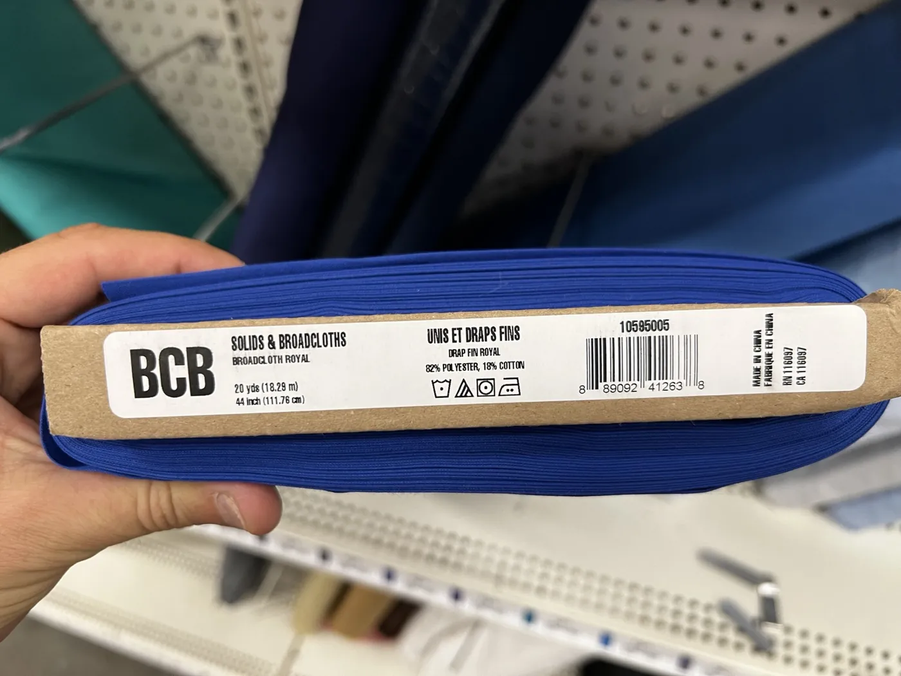
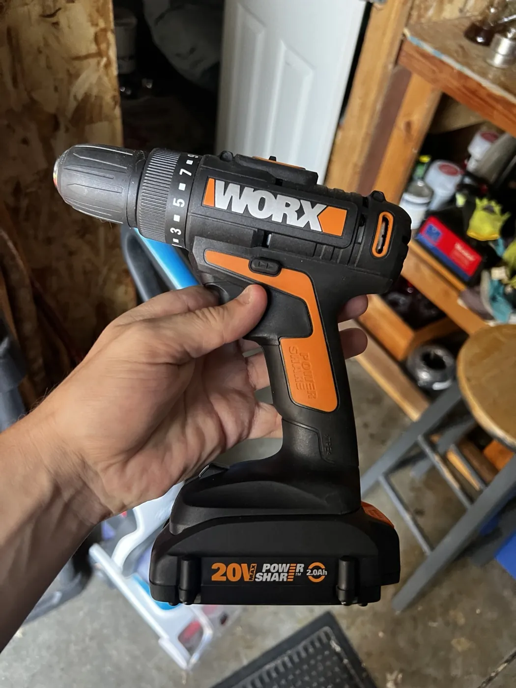
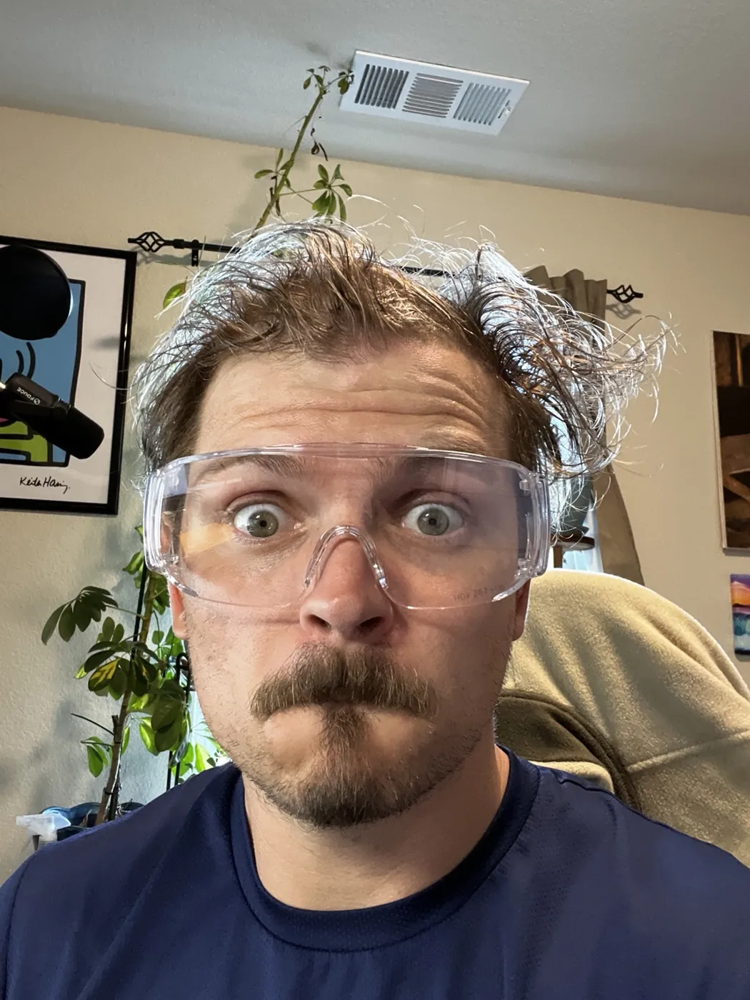
Construction Process
5.1Carving the Wand
I sawed off some of the branch’s knots and used whittling knives to establish the basic shape. A rotary tool with a circular sanding attachment helped remove material and smooth the profile. I shaped the grip to sit comfortably in the hand, flattening and contouring areas where needed.
The spiral was a spontaneous addition, something to give the wand a little pizzazz. I cut parts of it with a separate engraving tool fitted with a rounded bit, then refined the shape with the rotary tool.
I carved a recess near the natural thumb rest and set the blue agate in place with epoxy. After plenty of sanding (80, 120, 180, then 240 grit), I applied three coats of teak oil. The finished wand measured about 17.25 inches.
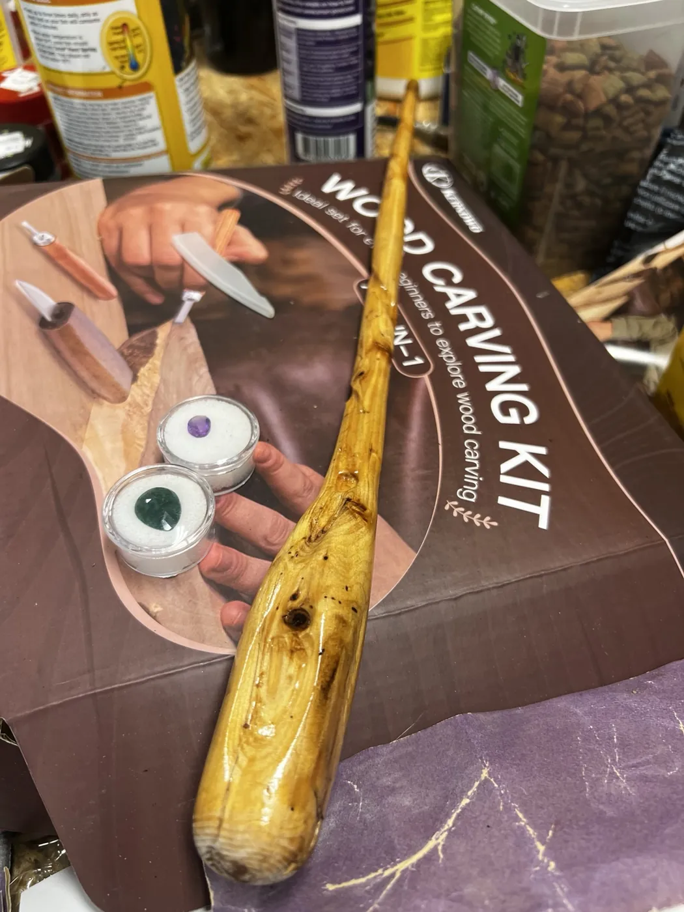
5.2Cutting the Redwood Case
I marked a lengthwise cutting line on the 3.5 × 3.5 × 20-inch redwood block and set out to split it into a lid and base with a hand saw.
That took three days.
There was plenty of sweat, sawdust, and a very red face. Despite following the marked line as carefully as I could, the blade wandered left and right over the long cut. The resulting surfaces weren't perfectly even, and that affected how the lid lined up later. Next time I'd use better workholding and a guide, or a suitable power saw.
5.3Hollowing the Interior
I hollowed both the lid and the base by hand with chisels. Removing that much wood was slow going, and some overly aggressive cuts caused cracks.
I repaired the damaged sections with epoxy, holding the pieces under pressure while it cured. Epoxy is KING. Once I switched to smaller, more controlled cuts, things went better.
I needed enough depth for the wand and its padding, but I didn't leave quite enough allowance for the foam and fabric. A better bulk-removal method and earlier dimensional planning would have helped.
5.4Painting & Hardware
I primed the redwood, then applied roughly two coats of satin-black spray paint with a few touchups. The finish has a slight sheen rather than a flat matte appearance.
I added brass-colored decorative brackets, hinges, and a keyed clasp sourced through Ace Hardware and Etsy. One small screw head snapped during installation. Rather than start over, I shifted the bracket to conceal the broken screw and installed another fastener.
Predrilling and hand-tightening the small screws would have been smarter. The lid also remained a little uneven because of the original hand-saw cut.
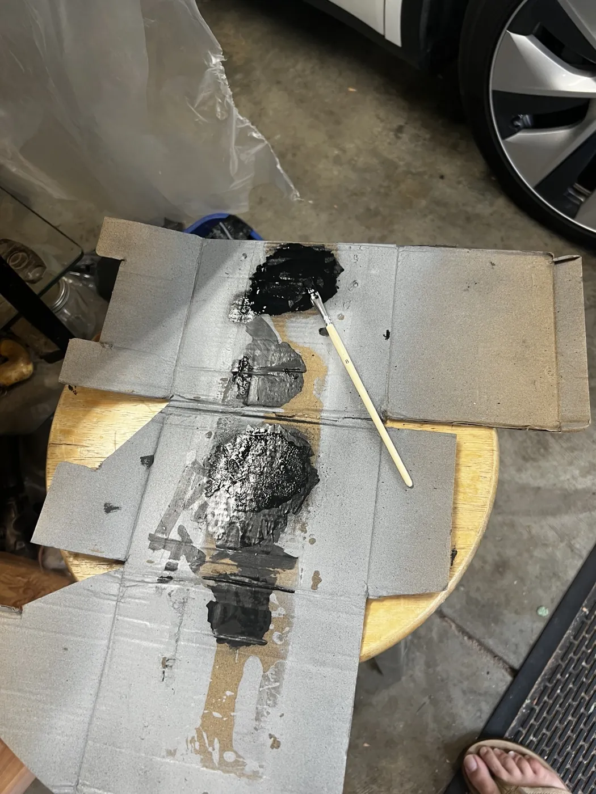
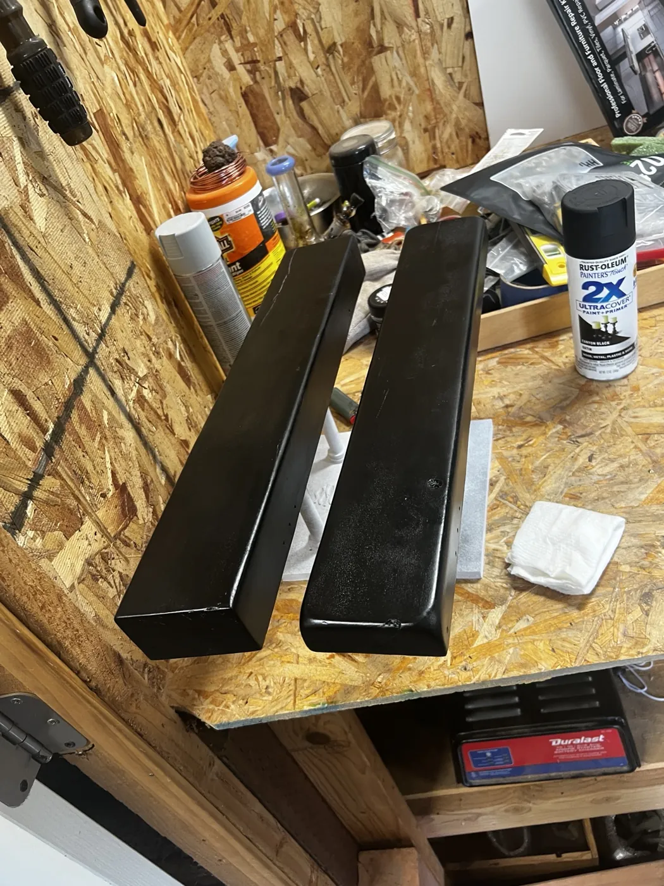
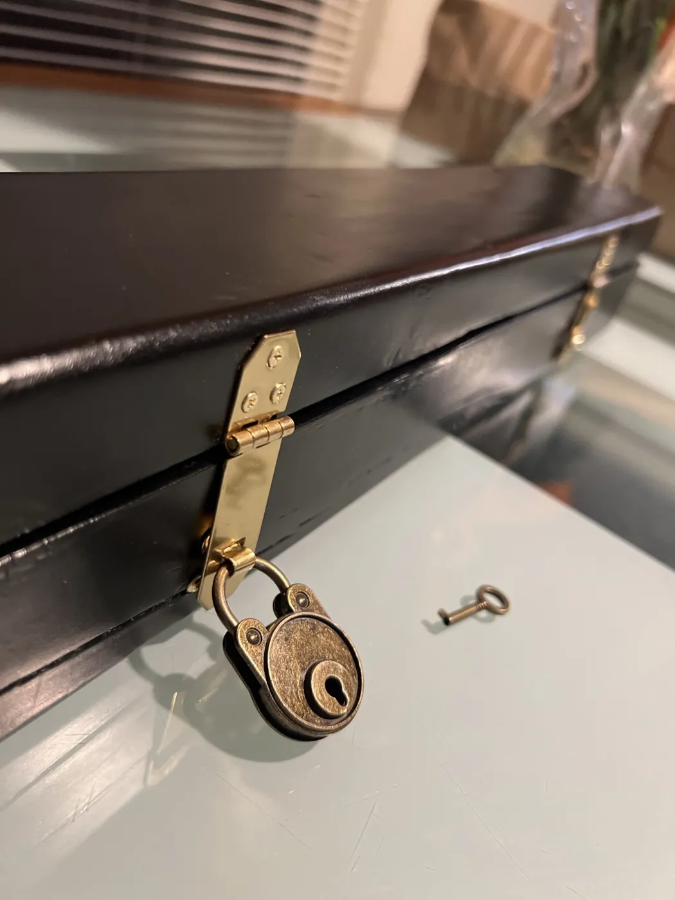
5.5Designing a Drying Stand
While painting, I needed a way to support the case halves without resting their fresh exterior surfaces directly on the workbench.
I designed and 3D-printed a custom drying stand with a wide, stable base, vertical supports, and a narrow upper cradle that fit inside the hollowed case. I used the stands to elevate the case halves during painting and drying.
It was an unexpected side project, but a useful one. Sometimes making one thing means making another thing just to finish the first thing.
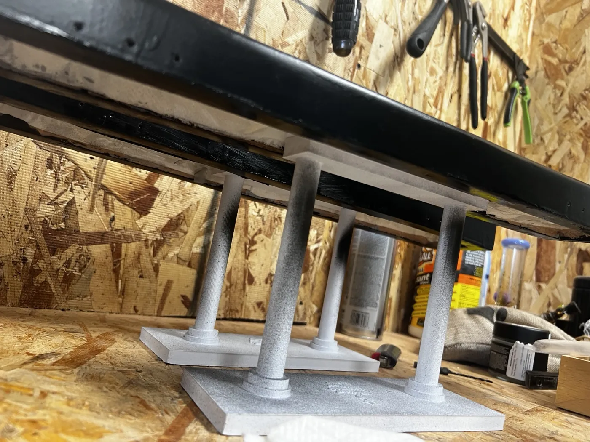
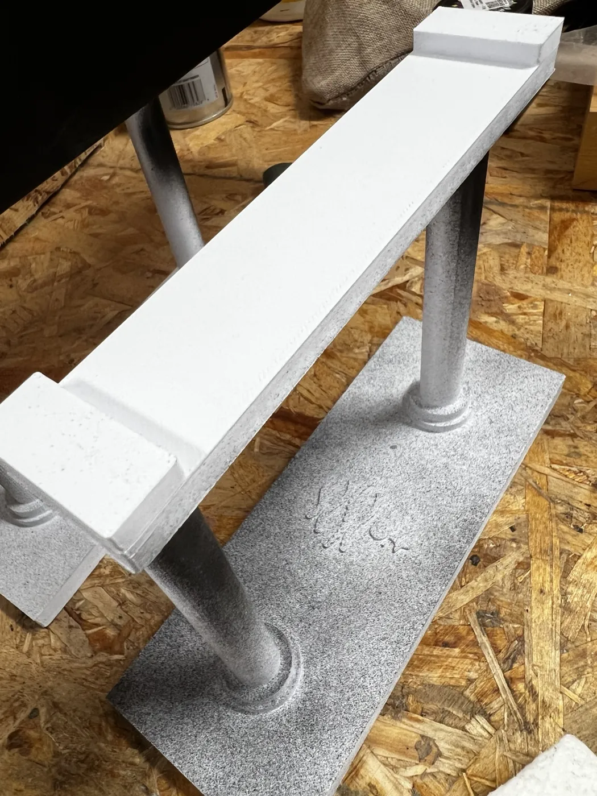
5.6Foam & Upholstery
For the interior, I wanted the wand to rest in a fitted blue-lined cavity rather than sit directly against the wood.
I used dense floral-arrangement foam for the padding, but shaping it turned out to be more difficult than expected. Without a proper cutting tool, I ended up crushing, compressing, and occasionally breaking pieces apart to get the shape I needed. Some of those pieces had to be glued back together.
Not exactly precision engineering.
Once the foam was shaped, I wrapped it in blue fabric, carefully forming the material around the contours of the wand's recess. I pulled the fabric around the foam and glued it together on the back, keeping the attachment points hidden from view.
The upholstery made a huge difference to the finished appearance. The blue fabric contrasted nicely with the satin black exterior and gave the case a much more finished look.
Unfortunately, I hadn't fully accounted for the combined thickness of the foam and fabric when planning the cavity, so the final fit was tighter than intended.
I'd absolutely upholster another case, but next time I'd use more suitable foam, a cleaner cutting method, and better dimensional planning.
5.7Letter, Wax Seal & Final Assembly
With the wand and case coming together, I wanted to give the gift a little more context. That's where the Order of the Blue Phoenix came in.
I wrote a letter introducing Phoenix to a fictional magical lineage, explaining the significance of the blue stone and the idea that he could choose what to do with his own magic. I went through several drafts, using AI to help refine the story and make the language more accessible for a young child.
Around the same time, I'd been experimenting with different 3D-printing projects. I decided to design a custom wax stamp featuring a phoenix symbol and an “H” for Hogwarts.
I figured a stamp would literally seal the deal.
After 3D-printing the stamp and experimenting with sealing wax, I settled on a combination of blue, gold, and silver for the seal on the blue envelope.
I placed the wand inside its upholstered black case, complete with brass-colored hardware and keyed lock. The sealed letter accompanied the case. I also included one of my previously made resin crystals, a last-minute addition that helped weigh the letter down during delivery.
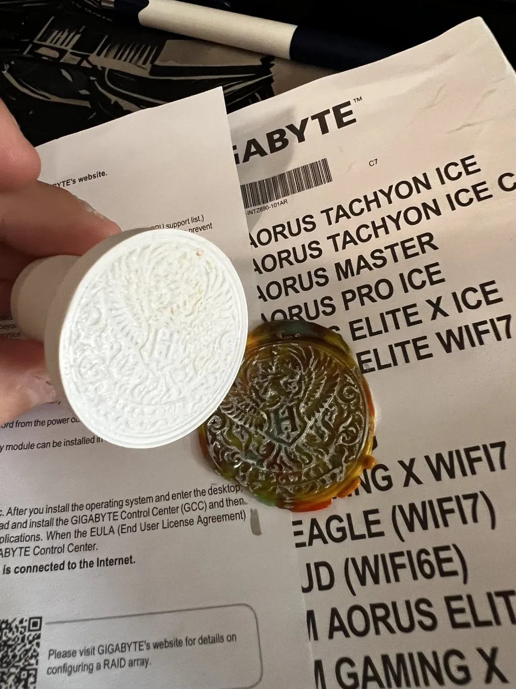
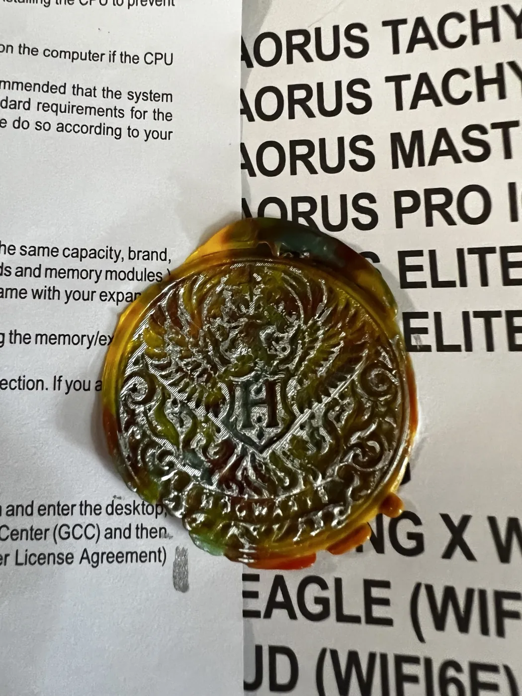
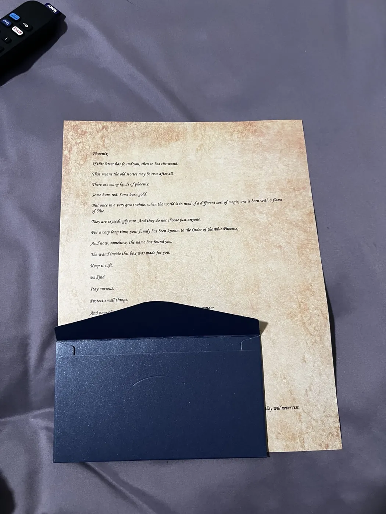
5.8Delivery
With everything finished, I delivered the gift to Phoenix's mother's doorstep one evening, around 7 to 8 PM.
I wanted to keep a little mystery around where the wand came from, so rather than handing it over in person, I left the case and letter at the door and made a quick getaway.
The resin crystal also came in handy here, keeping the letter from blowing away.
Later, I received some photos and a thank-you from Phoenix.
Mission accomplished. A little magic delivered.
Challenges & Solutions
| Challenge | What I did | What I'd change |
|---|---|---|
| Uneven case cut | Hand-sawed the redwood for three days; blade drift left uneven mating surfaces. | Better workholding and a guide, or a suitable power saw. |
| Difficult hollowing | Chiseled both halves by hand; aggressive cuts caused cracks. | Smaller cuts and more efficient bulk removal. |
| Cracked redwood | Repaired with epoxy and held under pressure while curing. | Respect grain direction and avoid forcing chisels. Epoxy is KING, but avoiding cracks is better. |
| Broken hardware screw | Repositioned a bracket to conceal the broken screw, then installed another fastener. | Pilot holes and hand-tightening. |
| Difficult foam shaping | Compressed, broke, and glued floral foam to fit. | Easier-to-cut foam and better shaping tools. |
| Tight upholstered interior | Fitted fabric-covered foam into the cavity. | Allow for foam and fabric thickness from the start. |
The uneven cut affected lid alignment, and the cavity dimensions affected upholstery. Still, I worked through the problems without starting over.
Final Results
The finished project consisted of a handcrafted wooden wand, a fitted presentation case, and a few extras to bring the whole thing together.
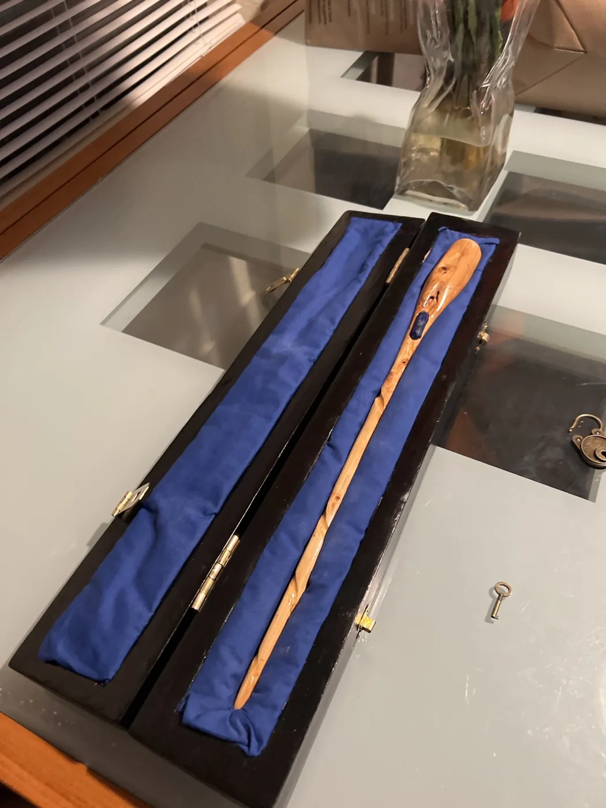
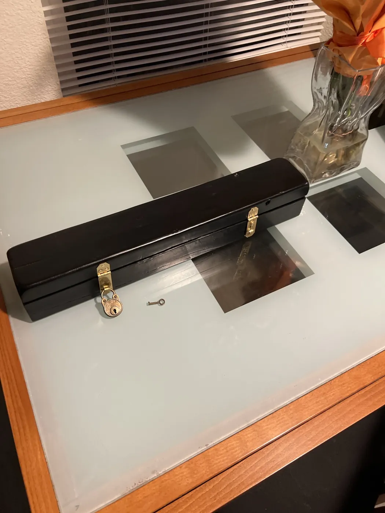
The Wand. Approximately 17.25 inches long, with an ergonomic grip, carved spiral, and blue agate embedded near the thumb rest. Sanded through several grits and finished with three coats of teak oil.
The Presentation Case. A 20-inch solid-redwood case, hollowed in both halves, finished in satin black, with brass-colored decorative hardware, hinges, and a keyed clasp. Inside, blue fabric over shaped foam cradles the wand. The lid isn't perfectly aligned, but the case is functional.
The Finishing Touches. A letter introducing the Order of the Blue Phoenix, a blue envelope with a custom 3D-printed wax-seal impression, and a handmade resin crystal. The gift was delivered in time for Phoenix's birthday, followed by photos and a thank-you.
This was my first wand and my first wooden presentation case. There are plenty of things I'd improve, but I'm happy with the result and what I learned along the way.
Lessons Learned
- Start with what you have.I didn't begin with a complete workshop or detailed plans. I had a branch, some carving tools, and an idea. The project evolved as I worked.
- Precision matters, especially early on.Three days of hand-sawing taught me that cutting a straight line through a solid block of wood is harder than it looks. Small inaccuracies early can create problems later.
- Work with the material, not against it.Large chisel cuts damaged the redwood. Smaller, more controlled cuts would have saved repairs.
- Epoxy is KING.It helped secure the stone and repair mistakes. It doesn't replace good technique, but it makes experimentation less intimidating.
- Sometimes you need to make a tool to make a thing.Designing and printing the drying stand was a favorite example of combining skills to solve a practical problem.
- Leave room for finishing materials.Foam, fabric, paint, and hardware affect the final fit. I'll plan for them earlier next time.
- Just go for it.This was my first wand and case. I made mistakes, improvised, and learned. If you can afford to experiment, experiment. You get better by making things.
Future Improvements
- Better cutting and workholding.Use a cutting guide, better clamps, or a suitable power saw rather than repeat three days of hand-sawing.
- More efficient hollowing.Explore a Forstner bit or router to remove bulk material before finishing with chisels.
- Improved hardware installation.Plan hinge and clasp positions earlier, drill pilot holes, and hand-tighten small screws.
- Cleaner upholstery.Choose easier-to-shape foam, leave clearance for fabric, and refine the hidden attachment method.
- More deliberate finishing.Allow more time between painting, drying, and assembly. Reuse the printed drying stands.
- Keep experimenting.I'd definitely make another wand. In fact, I've already started working toward the next one. I also want to make more presentation boxes and improve my carving. I still have redwood left from the original lumber purchase.
The next version doesn't need to be completely different. Just a little more precise, a little more efficient, and hopefully with fewer broken screws.
Project Archive
- Project
- Phoenix's Wand
- Chronicle
- 001
- Started
- June 2026
- Status
- Completed and delivered
- Category
- Woodworking / 3D Printing / Mixed Media
The archive contains original photographs and videos of the wand, case, painting and finishing, 3D-printed drying stands, wax stamp, letter, and delivery. It also records construction measurements, materials, techniques, and lessons learned.
Future wand builds and wooden cases will be documented as separate Project Chronicles, referencing techniques learned here.
Next: the Housing Market Scanner.
A Python research tool that compares 298 U.S. housing markets. The next wand is already underway too, and will get its own chronicle.